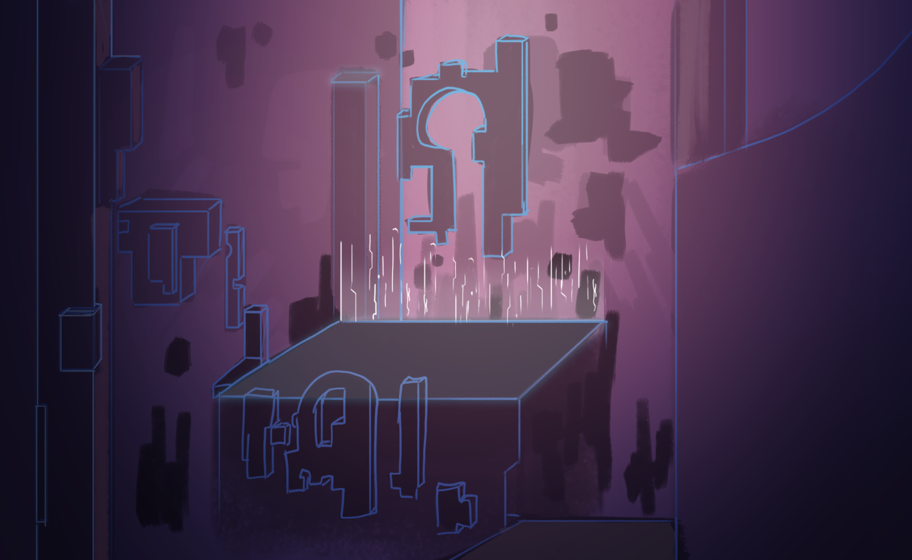
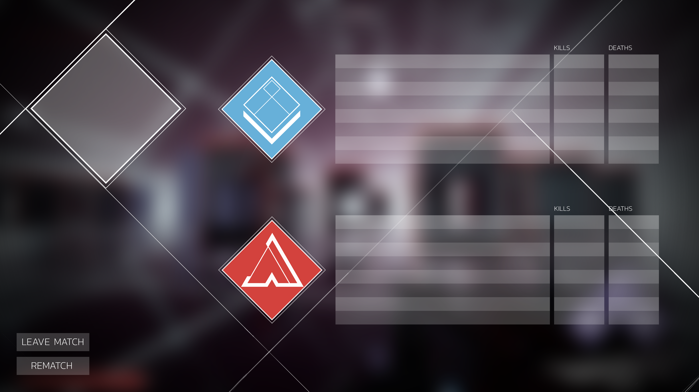
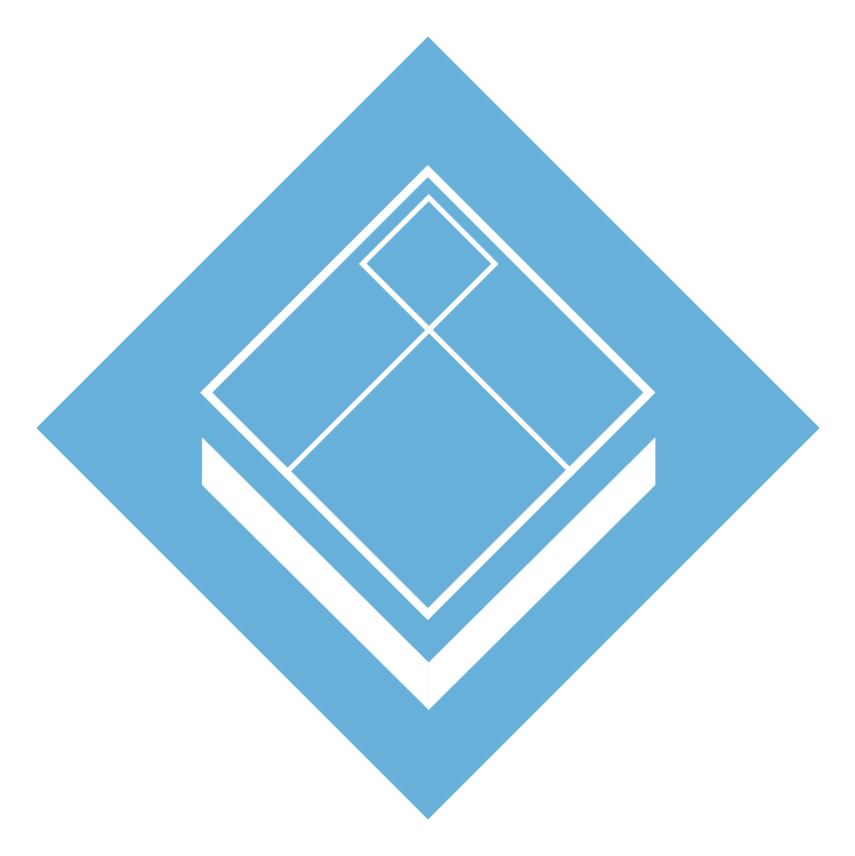

During my internship at Grey Games, I had the oppurtunity to make concepts for a multiplayer game name SWITCH. In this game the player could manipulate the arena whilst shooting their opponents and capture their flag.
I made a few concepts to grasp the feel of the game and also made a UI that communicated to the player about their health, abilities, flag location and more.



